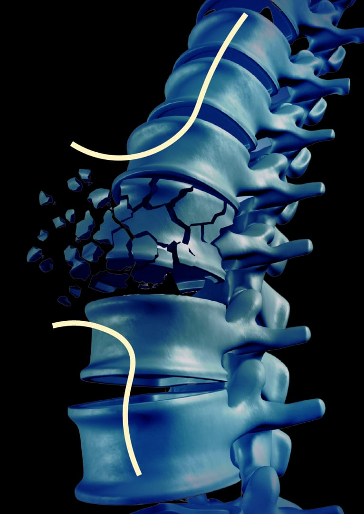

01?
Kuis Kesehatan Tulang
Asesmen 12 item adaptasi OKAT dengan interpretasi skor otomatis.
Bank Tulang dirancang sebagai modul edukasi dan pemantauan kesehatan tulang untuk mahasiswa berbasis kuis OKAT, pelacakan kalsium, dan aktivitas menumpu beban.

Simulasi ini bersifat edukatif, bukan diagnosis medis. Parameter pengetahuan, kalsium, dan aktivitas digunakan untuk menggambarkan kesiapan perilaku harian.
Sesuaikan nilai pada setiap variabel untuk melihat perubahan indikator kesiapan.
Panel ini menampilkan estimasi kesiapan berdasarkan parameter yang dipilih.
Setiap modul dikaitkan dengan asesmen, pelacakan, edukasi, penetapan target, penguatan perilaku, atau umpan balik sosial.
Asesmen 12 item adaptasi OKAT dengan interpretasi skor otomatis.
Hasil kuis dikategorikan menjadi Kurang, Cukup, atau Baik sesuai tabel interpretasi.
Pencatatan makanan harian dengan estimasi asupan kalsium berbasis database makanan.
Pencatatan latihan menumpu beban disertai progres mingguan dan umpan balik.
Materi edukasi singkat dalam bentuk video, infografis, dan artikel berbasis bukti.
Penetapan target kalsium dan aktivitas fisik dengan progres yang dapat dipantau.
Penguatan perilaku melalui poin, tonggak pencapaian, dan lencana.
Tantangan kampus untuk mendukung umpan balik sosial dan partisipasi komunitas.
Modul edukasi dan pelacakan kesehatan tulang untuk mahasiswa, mencakup kuis pengetahuan adaptasi OKAT 12 item, pelacak kalsium harian, dan tantangan komunitas kampus.
Empat komponen yang membentuk gambaran personal risiko tulangmu - diperbarui setiap hari, bukan sekali tes lalu lupa.
Asesmen awal 12 item adaptasi OKAT - pengetahuan dasar, persepsi kerentanan, dan persepsi risiko personal.
Skor pengetahuan tulang dari hasil kuis: Kurang, Cukup, atau Baik sesuai interpretasi OKAT.
Catatan makanan harian dengan database makanan Indonesia - lihat estimasi asupan kalsiummu secara langsung.
Pelacak latihan menumpu beban harian - umpan balik instan dan penghitung rentetan buat jaga konsistensi.
Pengetahuan perlu didukung oleh pemantauan dan penguatan perilaku agar kebiasaan sehat tulang dapat terbentuk secara berkelanjutan.
Video pendek di bawah 60 detik, infografis interaktif, dan artikel berbasis bukti tentang massa tulang puncak, kalsium, dan latihan menumpu beban - diformat sesuai kebiasaan konsumsi konten mahasiswa.
Penetapan target spesifik untuk asupan kalsium dan frekuensi latihan, lengkap dengan pengingat otomatis - target proksimal terbukti lebih efektif dari tujuan umum.
Poin per aktivitas tercatat, lencana pencapaian - dorongan motivasi intrinsik lewat pencapaian, bukan paksaan.
Aktivitas fisik dan asupan kalsium yang tercatat dikonversi menjadi poin. Dinding sosial dan papan peringkat kampus mendukung pembentukan norma kelompok yang positif.